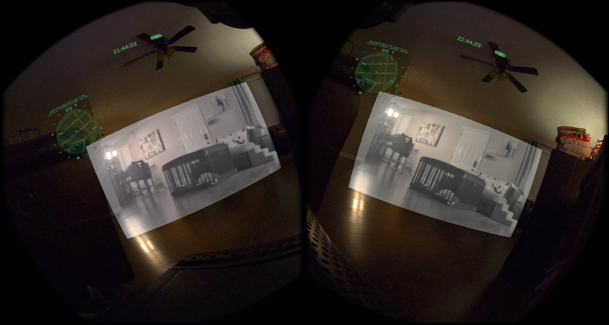
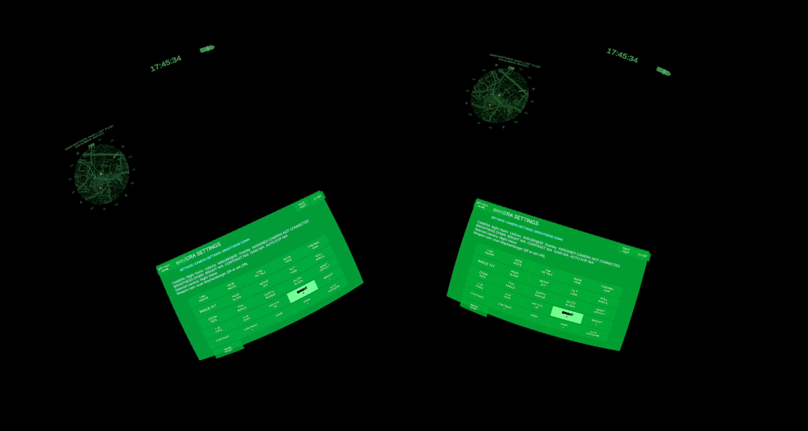
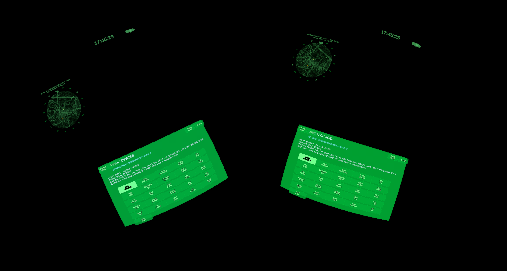
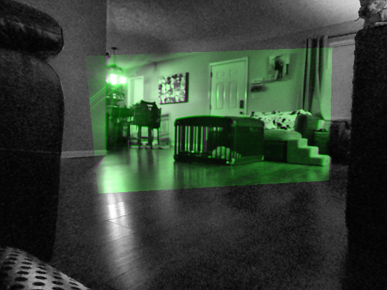

TSV
FPV feeds, thermal, night vision, Meshtastic messages, ATAK team map HUD, with surroundings still visible and hands free.
TSV adds those views to Quest 3 passthrough. Using external cameras and tracked hand controls for controllerless use.

The bright rectangle comes from the USB night-vision camera. The color view around it is Quest passthrough. The green map and heading are drawn by TSV.
08 SEP 2026 · UTC
What it does
- FPV & camera views
- Watch drone video through Sphere Link or the supported analog receivers. Move FPV between a large view, center, mirror, small HUD.
- Weapon-mounted cameras
- The weapon camera lets you see around corners or above trenches. Leave it behind to monitor, hands free in real time.
- Thermal & night vision
- See in the dark, see in IR, see in real time, all in one place.
- Map & Meshtastic
- Your GPS position, team nodes, messages, markers and routes. Browser operations map can connect headsets for map work and messaging through a configured radio. Or standard ATAK or Meshtastic radios for off-grid use.
- Hand controls
- Controls use the non-dominant or non-weapon hand only. Hold a pinch and rotate your wrist to change a view. Triple-tap the opposite wrist to open Settings. Adjust cameras and save the setup without controllers.
Inside the headset

The narrow upper mirror shows night vision. The thermal camera occupies the lower forward view; the map stays visible alongside both.

Menu view from an August control capture. Current source controls are separated into camera, alignment and thermal-image pages.

Menu view from the same control capture. Radio connection, check-in, channel and favorite-node actions are operated inside the headset.
Recorded Quest views, with display rotation corrected for this page. The menu captures are from August; the controls reference covers the current build.
Camera alignment: 23.14 px to 3.09 px
TSV saves the camera’s position, perspective, lens and timing correction. In the September 8 NV check, median registration error fell from 23.14 to 3.09 native NV pixels, with 908 matched features.
The same recorded run delivered 56.97 median NV FPS and 72.12 app FPS, with live NV in all 60 samples.
Quest 3, v0.11.203. Results describe this room and configuration. Moving-head alignment in both eyes and wearer comfort still need separate on-head validation. Recorded results

The tinted area is the registered NV image against the RGB reference. Look at the doorframes and furniture edges.
Still being worked on
Person-detecting radar and visual detection remain experimental but usable.
To use TSV
You’ll need a Quest 3, the TSV app and supported hardware for the views you want to use. Local cameras and hand controls run on the headset; team and remote features need their respective connections.